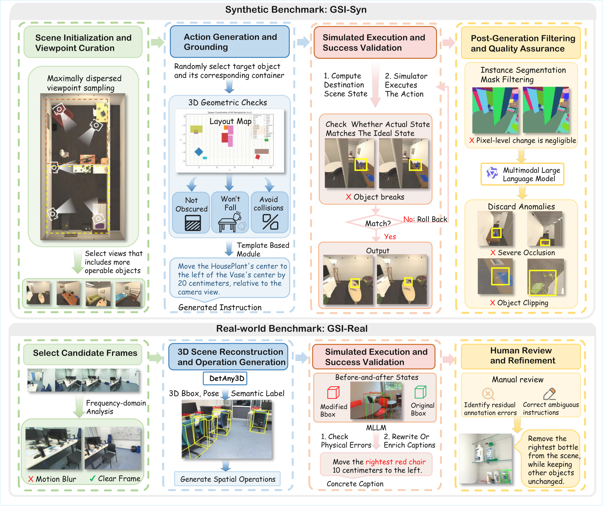
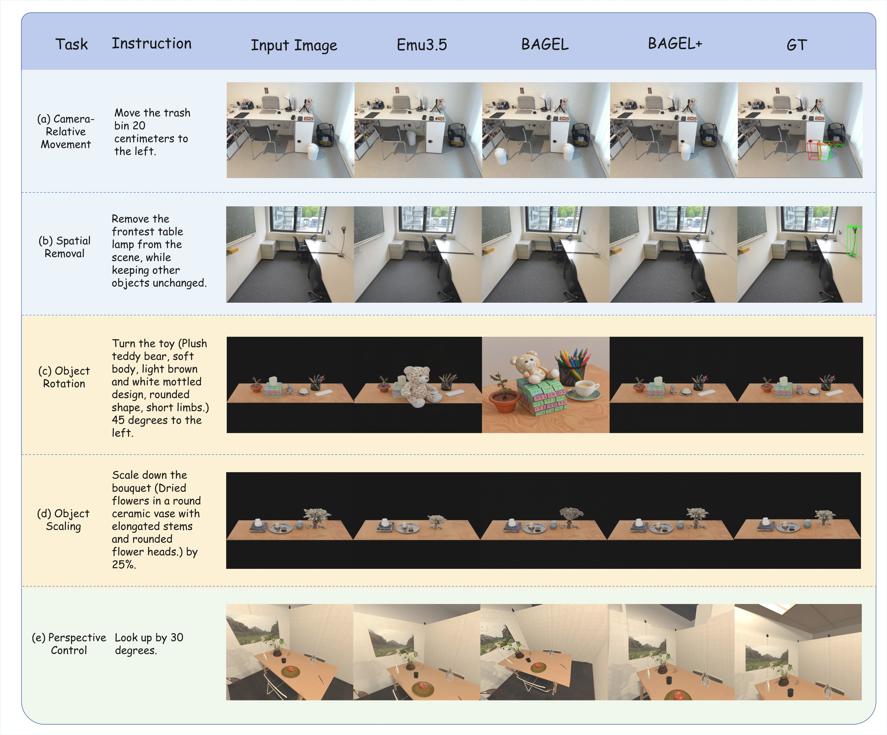
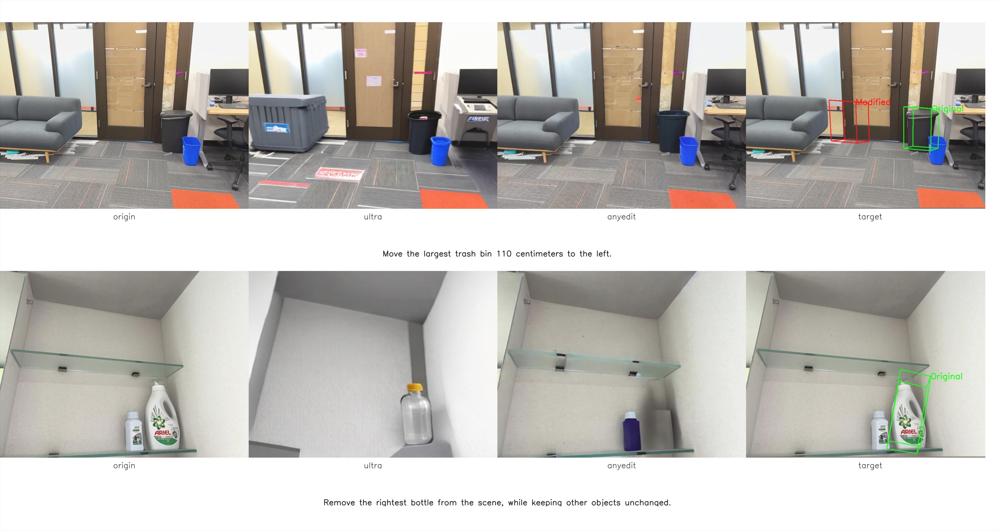
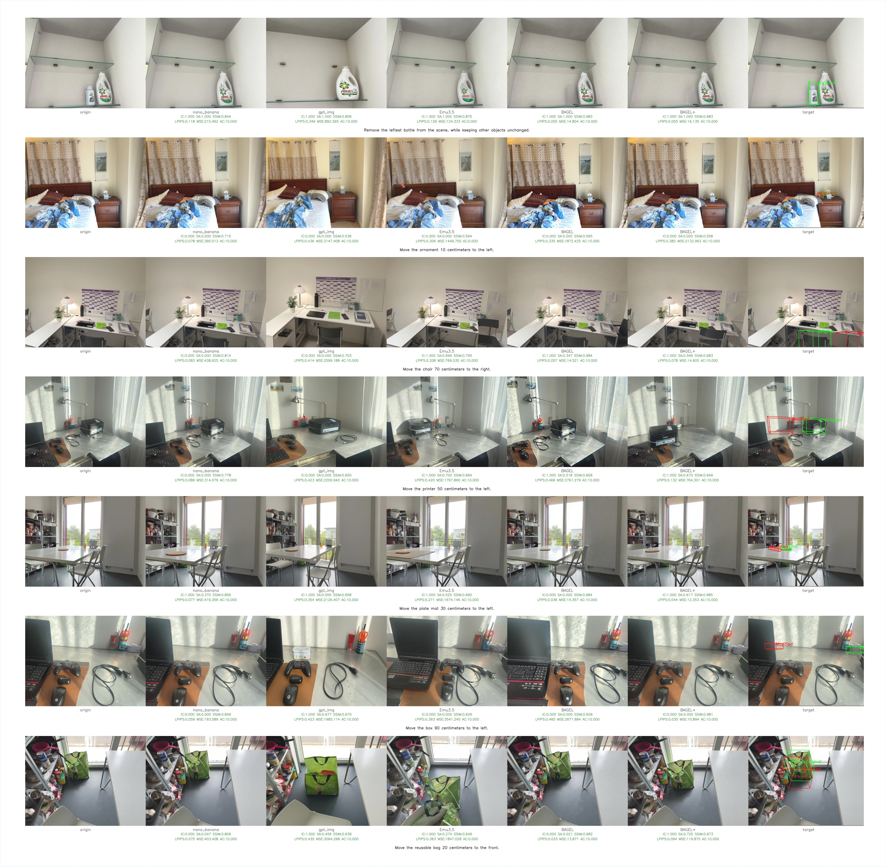
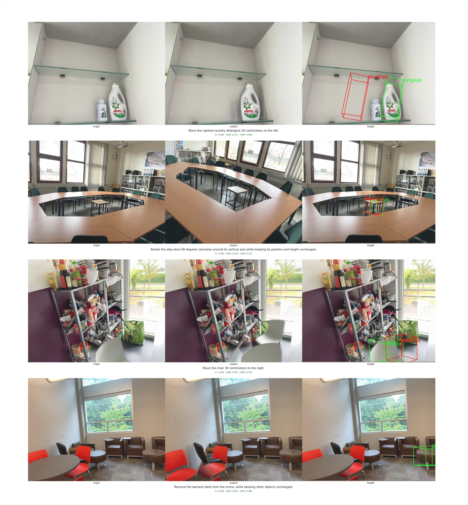

Spatial intelligence is essential for multimodal large language models, yet current benchmarks largely assess it only from an understanding perspective. We ask whether modern generative or unified multimodal models also possess Generative Spatial Intelligence (GSI)—the ability to respect and manipulate 3D spatial constraints during image generation—and whether such capability can be measured or improved.
We introduce GSI-Bench, the first benchmark designed to quantify GSI through spatially grounded image editing. It consists of two complementary components: GSI-Real, a high-quality real-world dataset built via a 3D-prior-guided generation and filtering pipeline, and GSI-Syn, a large-scale synthetic benchmark with controllable spatial operations and fully automated labeling. Together with a unified evaluation protocol, GSI-Bench enables scalable, model-agnostic assessment of spatial compliance and editing fidelity.
Experiments show that fine-tuning unified multimodal models on GSI-Syn yields substantial gains on both synthetic and real tasks and, strikingly, also improves downstream spatial understanding. This provides the first clear evidence that generative training can tangibly strengthen spatial reasoning—establishing a new pathway for advancing spatial intelligence in multimodal models.
A compact snapshot of GSI-Bench's scale and scope.
Four concrete steps toward spatial intelligence from generation.
We introduce GSI-Bench, which operationalizes GSI as spatially grounded image editing—requiring models to respect explicit 3D constraints while generating.
GSI-Real is the first high-quality real-world set for spatially grounded editing; GSI-Syn is a large-scale synthetic set with controllable operations and difficulty levels.
We build an end-to-end pipeline for data generation and evaluation that combines 3D grounding priors, rule-based operation sampling, MLLM captioning & validation, and human verification.
Fine-tuning on GSI-Syn—with no understanding or QA supervision—improves spatial generation and transfers to downstream spatial understanding benchmarks.
A unified pipeline for synthetic and real-world spatial editing data.

Each edit is scored along a fine-grained, model-agnostic protocol.
Does the output actually perform the requested spatial operation?
Is the 3D displacement, rotation, or scale close to the ground-truth geometry?
Are object identity, category, and appearance preserved after editing?
Is the rest of the scene left untouched outside the intended region?
Performance of nine state-of-the-art image-editing and unified multimodal models on GSI-Bench. Fine-tuning BAGEL on GSI-Syn—BAGEL + GSI-Syn—delivers the largest gains on every subset. Higher is better.
| Subset | Dim | Closed-Source | Open-Source | Δ↑ | ||||||||
|---|---|---|---|---|---|---|---|---|---|---|---|---|
| Nano Banana | GPT-img | AnyEdit | UniWorld | Ultra | Qwen | OmniGen2 | Emu3.5 | BAGEL | BAGEL + GSI-Syn | |||
| GSI-Real | IC | 38.78 | 41.72 | 10.20 | 28.80 | 10.66 | 51.02 | 33.56 | 51.70 | 31.97 | 40.14 | +8.16 |
| SA | 21.60 | 28.04 | 8.37 | 18.36 | 5.70 | 31.22 | 19.62 | 29.51 | 22.07 | 27.76 | +5.68 | |
| AC | 38.78 | 41.52 | 9.68 | 28.75 | 9.48 | 50.95 | 33.20 | 51.70 | 31.88 | 40.14 | +8.25 | |
| EL | 34.92 | 27.52 | 8.75 | 18.51 | 8.97 | 40.55 | 29.82 | 41.17 | 27.89 | 37.11 | +9.22 | |
| Avg | 33.52 | 34.70 | 9.25 | 23.61 | 8.70 | 43.44 | 29.05 | 43.52 | 28.46 | 36.28 | +7.83 | |
| GSI-Syn-Tabletop | IC | 36.62 | 39.33 | 10.33 | 15.83 | 2.17 | 27.33 | 0.00 | 39.17 | 27.17 | 50.67 | +23.50 |
| SA | 38.96 | 26.16 | 22.84 | 30.33 | 3.09 | 25.52 | 0.00 | 24.09 | 26.52 | 44.10 | +17.58 | |
| AC | 36.62 | 38.40 | 10.33 | 15.58 | 1.33 | 27.27 | 0.00 | 38.82 | 26.52 | 50.67 | +24.15 | |
| EL | 35.91 | 31.98 | 9.52 | 14.43 | 1.93 | 25.51 | 0.00 | 34.91 | 26.17 | 49.52 | +23.36 | |
| Avg | 37.03 | 33.97 | 13.26 | 19.04 | 2.13 | 26.41 | 0.00 | 34.25 | 26.59 | 48.74 | +22.15 | |
| GSI-Syn-Room | IC | 20.65 | 8.05 | 7.00 | 12.69 | 2.20 | 20.40 | 18.71 | 20.70 | 16.11 | 24.01 | +7.90 |
| SA | 16.85 | 8.05 | 6.46 | 11.55 | 2.21 | 17.73 | 15.03 | 16.56 | 14.53 | 19.41 | +4.88 | |
| AC | 28.01 | 16.69 | 11.85 | 20.40 | 3.46 | 28.67 | 25.94 | 26.98 | 24.00 | 31.64 | +7.64 | |
| EL | 19.65 | 7.34 | 5.50 | 11.03 | 1.86 | 18.48 | 17.13 | 17.56 | 14.82 | 22.61 | +7.79 | |
| Avg | 21.29 | 10.03 | 7.70 | 13.92 | 2.43 | 21.32 | 19.20 | 20.45 | 17.37 | 24.42 | +7.05 | |
Fine-tuning on GSI-Syn uses only spatially grounded generative editing data—no QA or reasoning supervision—yet consistently improves downstream spatial understanding.
| Model | Size | Overall | Dynamic Reasoning | Spatial Interaction | Complex Logic | Perspective Taking |
|---|---|---|---|---|---|---|
| GPT-4-turbo† | — | 34.06 | 38.39 | 36.49 | 24.80 | 33.69 |
| Gemini-2.5† | — | 52.12 | 63.59 | 67.46 | 35.67 | 43.10 |
| LLaVA-1.5 | 7B | 34.97 | 35.38 | 35.13 | 25.99 | 38.82 |
| Qwen-VL-2.5 | 7B | 39.25 | 46.30 | 30.06 | 35.65 | 39.68 |
| BAGEL | 7B | 41.55 | 47.38 | 45.67 | 32.14 | 39.22 |
| BAGEL + GSI-Syn | 7B | 42.07 | 48.33 | 47.67 | 28.97 | 40.29 |
| Model | Overall | Perspective | Goal Aiming | Egocentric Action | Object Motion | Egocentric Motion |
|---|---|---|---|---|---|---|
| Qwen-VL-2.5 | 56.33 | 43.94 | 67.65 | 56.76 | 56.52 | 56.52 |
| BAGEL | 65.33 | 46.97 | 75.00 | 75.68 | 65.22 | 60.87 |
| BAGEL + GSI-Syn | 69.33 | 48.48 | 85.29 | 72.97 | 65.22 | 73.91 |
Five instruction types across GSI-Real, GSI-Tabletop, and GSI-Room. BAGEL+ (BAGEL + GSI-Syn fine-tuning) preserves unaffected content while executing the spatial operation more faithfully.




Even leading closed-source models show large gaps on GSI-Real and GSI-Syn-Room, with Spatial Accuracy often below 30. Precise 3D-aware editing remains an open challenge.
Trained purely on synthetic pairs, BAGEL + GSI-Syn still improves on GSI-Real by +7.83 Avg, with Edit Locality jumping +9.22.
Across models, spatial removal succeeds more often than translation, rotation, or scaling—indicating an inductive bias toward deletion rather than true geometric edits.
On OmniSpatial, GSI-Syn fine-tuning raises BAGEL by +2.00 on Spatial Interaction and +1.07 on Perspective Taking; on SAT-Real, overall accuracy jumps by +4.00.
If you find GSI-Bench useful for your research, please cite our paper.
@inproceedings{zhu2026gsi,
title = {Exploring Spatial Intelligence from a Generative Perspective},
author = {Zhu, Muzhi and Jiang, Shunyao and Zheng, Huanyi and Luo, Zekai
and Zhong, Hao and Li, Anzhou and Wang, Kaijun and Rong, Jintao
and Liu, Yang and Chen, Hao and Lin, Tao and Shen, Chunhua},
booktitle = {IEEE/CVF Conference on Computer Vision and Pattern Recognition (CVPR)},
year = {2026}
}